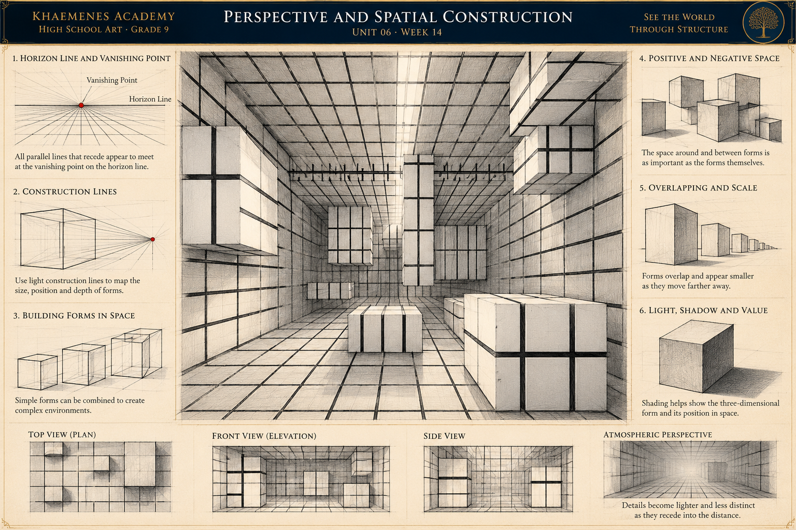

Horizon and viewpoint
In level-view perspective, the horizon corresponds to eye level. A change of viewpoint changes the visible faces of objects and the position of the horizon in the drawing.
KHAEMENES ACADEMY · ART 101 · UNIT 06
Unit 06 · Space, Perspective and Designed Environments
How can artists construct convincing spatial depth while recognizing that linear perspective is one useful representational method rather than the only way to organize a picture?
Continue Week 13's study of positive and negative space and figures in environments. This week develops horizon, vanishing point, orthogonals, relative size, overlap and atmospheric depth through original observation and construction.
In level-view perspective, the horizon corresponds to eye level. A change of viewpoint changes the visible faces of objects and the position of the horizon in the drawing.
In a one-point setup, receding edges aligned with the viewing direction converge toward a common point. Horizontal and vertical front-facing edges remain aligned to the picture plane.
Overlap, relative size, ground contact, value, contrast and atmospheric effects help create depth even when a scene does not follow a simple one-point construction.
Step 1: Draw a 20 cm wide rectangular picture area. Place a horizontal eye-level line at 8 cm above the bottom and a vanishing point near its center. Step 2: Draw a smaller rectangle around the vanishing point to represent the far wall. Step 3: Connect corresponding corners of the far wall to the picture-area corners to establish floor, ceiling and side planes. Step 4: Place framed artwork on the side walls using receding edges that aim toward the vanishing point and vertical edges for upright frames. Step 5: Add a nearby bench and a farther bench, checking floor contact and relative size. Step 6: Shade the floor and walls using a consistent light source; annotate two corrections from the first draft.
The measurements specify an example layout, not a required physical scene. A hallway viewed obliquely may require two-point or more complex perspective.
Use this original instructional illustration to study how a single viewpoint organizes a complex interior. Follow the horizon line and vanishing point, then compare construction lines, overlapping blocks, relative scale, positive and negative space, and light and shadow. The supporting plan, front and side studies show how different views describe the same kind of spatial problem.

1 · Eye level: identify the horizon and mark the principal vanishing point. 2 · Orthogonals: trace three floor, ceiling or wall edges that recede toward that point. 3 · Construction: reduce one complex block to its visible front face and receding edges. 4 · Space: identify a positive form and an adjacent negative-space shape. 5 · Depth: compare two blocks at different apparent distances and explain the role of overlap and scale. 6 · Light: distinguish a shaded face from a cast shadow, then test one observation using a real box and lamp. Keep your annotated sketch as portfolio evidence.
Stand at a safe location facing a hallway or a long tabletop. Identify a horizontal eye-level reference, nearest and farthest objects, overlap and apparent size changes. Make two observational thumbnails, noting which lines seem to converge.
Draw a horizon line and one vanishing point. Add a front-facing rectangular wall, then draw orthogonals from its corners toward the point to organize floor, ceiling and side walls. Add doors, frames and floor divisions with transverse horizontal and vertical edges. Check whether your chosen viewpoint genuinely supports a one-point model.
Repeat the room drawing with the horizon higher or lower. Mark which visible surfaces change and where eye level lies. Add three identical-height figures at different depths, using floor contact and the vanishing point to reason about their apparent size. Avoid making a universal claim about real-world body proportions.
Design a library, gallery or imaginative studio with foreground, middleground and background. Use one-point perspective where appropriate, then use Week 12's light-and-shadow principles to give objects volume. Save your first draft and revise two errors in convergence, scale, overlap or shadow consistency.
Research two credited artworks from different times or traditions that use space differently. Cite creator, title, date if known, medium, institution or source URL, and access date. Distinguish linear perspective from other legitimate ways of depicting space. Ask a reviewer to identify the eye level and spatial route; write a 120–200 word reflection.
Keep construction lines visible in at least one study, and label your assumptions. Include a comparison of the first and revised composition.
These fields save only to this browser, not to an authenticated Academy account. Export your work for a backup and verify learner identity before sharing.
Observation and spatial reasoning (20) · Accurate perspective construction (25) · Original environment and visual organization (25) · Critique and revision (15) · Research, reflection and portfolio evidence (15). Educator review is separate from formative practice.
Five questions are randomly drawn from a fifteen-question bank. Four correct meets the 80% formative target. Submitted answers lock; retakes start a fresh attempt. Browser-local results do not independently authorize Academy progression.
Save the gallery construction, original environment, revision and citations in the artist portfolio. The next studio will develop more complex viewpoints and architectural form.
Return to Unit 06 overview